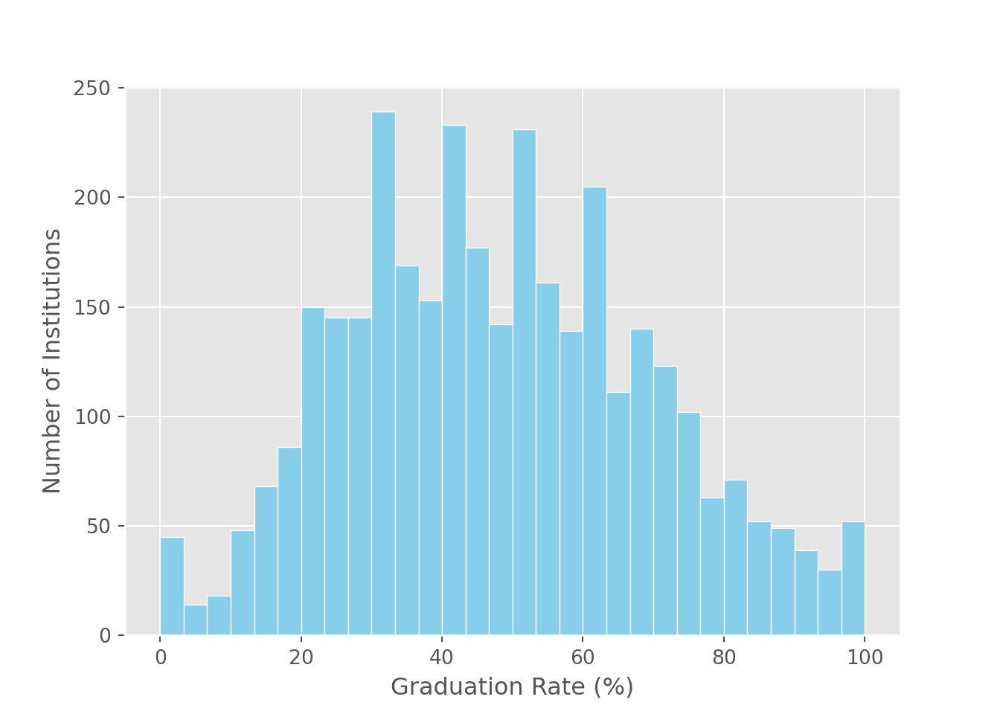
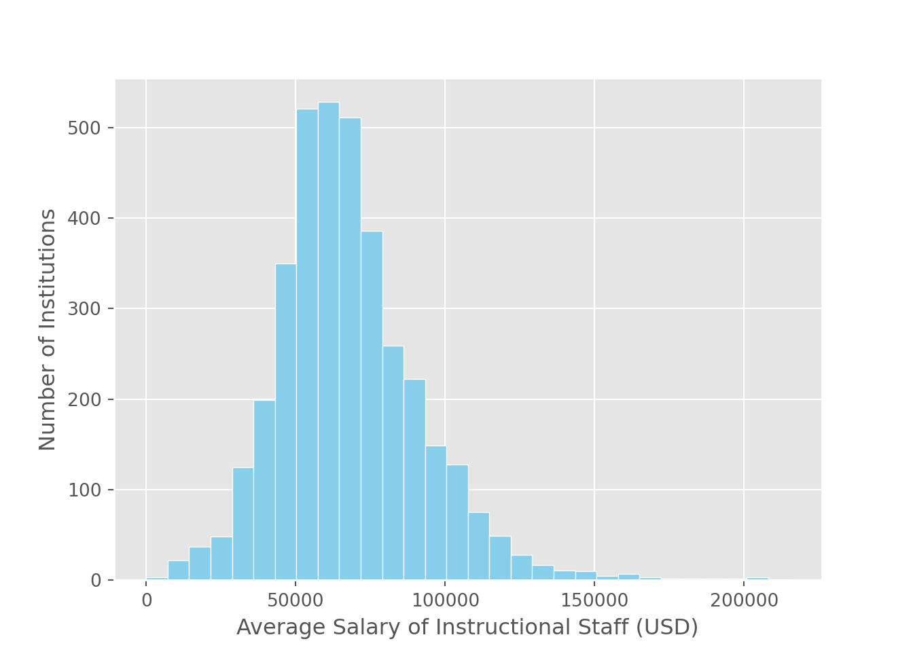

import pandas as pdExplaining or Predicting Graduation Rates Using IPEDS
Case Study
1. PREPARE
The LASER workflow
Each supervised machine learning “case study” is designed to illustrate how supervised machine learning methods and techniques can be applied to address a research question of interest, create useful data products, and conduct reproducible research. Each case study is structured around a basic analytics workflow modeled after the Data-Intensive Research Workflow from Learning Analytics Goes to School (Krumm et al., 2018):

Figure 2.2 Steps of Data-Intensive Research Workflow
In the overview presentation for this learning lab, we considered five steps in our supervised machine learning process. Those steps are mirrored here in this case study, with the addition of some other components of this workflow. For example, to help prepare for analysis, we’ll first take a step back and think about how we want to use machine learning, and predicting is a key word. Many scholars have focused on predicting students who are at-risk: of dropping a course or not succeeding in it. In the ML Learning Lab 1 case study will cover the following workflow topics as we attempt to develop our own model for predicting student drop-out:
Prepare: Prior to analysis, we’ll look at the context from which our data came, formulate a basic research question, and get introduced the {tidymodels} packages for machine learning.
Wrangle: Wrangling data entails the work of cleaning, transforming, and merging data. In Part 2 we focus on importing CSV files and modifying some of our variables.
Explore: We take a quick look at our variables of interest and do some basic “feature engineering” by creating some new variables we think will be predictive of students at risk.
Model: We dive deeper into the five steps in our supervised machine learning process, focusing on the mechanics of making predictions.
Communicate: To wrap up our case study, we’ll create our first “data product” and share our analyses and findings by creating our first web page using R Markdown.
In this module, we will be using data from the IPEDS, the Integrated Postsecondary Education Data System. We use Zong and Davis’ (2022) study as an inspiration for ours. These authors used inferential models to try to understand what relates to the graduation rates of around 700 four-year universities in the United States, predicting this outcome on the basis of student background, finance, academic and social environment, and retention rate independent variables. You can find this in the lit folder (with an elaboration and discussion questions in the Readings file for this module).
Zong, C., & Davis, A. (2022). Modeling university retention and graduation rates using IPEDS. Journal of College Student Retention: Research, Theory & Practice, 15210251221074379.
Loading packages
As highlighted in Chapter 6 of Data Science in Education Using R (DSIEUR), one of the first steps of every workflow should be to set up your “Project” structure. Recall that:
A Project is the home for all of the files, images, reports, and code that are used in any given project
Since we are working from a Python project cloned from GitHub, a Project has already been set up for you. Instead, we will focus on getting our project set up with the requisite Python Libraries we’ll need for analysis.
Libraries, are shareable collections of Python code that can contain functions, data, and/or documentation and extend the functionality of the base Python language. Libraries are loaded with the “import” keyword often with a namespace; e.g., import pandas as pd.
pandas 🐼
One of the core libraries we’ll use throughout LASER is pandas, Python’s go-to toolkit for working with data in tabular form. The pandas library provides powerful, flexible data structures — especially the DataFrame, which is similar to R’s tibble.
With pandas, you can:
read and write data from a variety of formats (like CSV, Excel, and SQL)
filter, reshape, and summarize datasets
and perform complex data transformations with concise, readable code
Think of pandas as the Python equivalent of the tidyverse’s data wrangling toolkit.
To get started, you can import the library like this:
scikit-learn 🤖
scikit-learn is Python’s most widely used library for machine learning and statistical modeling. It provides a consistent and intuitive API for building and evaluating models — similar in spirit to R’s tidymodels.
With scikit-learn, you can:
split data into training and test sets
preprocess features with pipelines
train a wide variety of models (regression, classification, clustering, etc.)
tune hyperparameters and evaluate performance
It’s designed to be modular and composable, making it easy to build repeatable workflows that integrate cleanly with pandas and other scientific Python libraries.
👉 Your Turn ⤵
In addition to pandas and sci-kit learn (sklearn) we will also use the statsmodels library to do regression analysis with its formula interface.
Use the code chunk below to load pandas and statsmodels.
import pandas as pd
import statsmodels.formula.api as smfTip: Avoid using wildcard imports (like from module import *) when loading a library. Instead, import the full library, import a specific function (from sklearn.model_selection import train_test_split – we’ll use this later!) or use a clear alias (import statsmodels.formula.api as smf). This helps keep your namespace clean, avoids conflicts, and makes your code easier to read and maintain.
Loading data
Next, we’ll read in data. We’ll use the pandas read_csv() function to load the data file.
For now, please read in the `ipeds-all-title-9-2022-data.csv` file. Use the read_csv() function to do this, paying attention to where those files are located relative to this case study file – in the data folder!
ipeds_df = pd.read_csv("data/ipeds-all-title-9-2022-data.csv")👉 Your Turn ⤵
In the chunk below, examine the data set using a function or means of your choice (such as just printing the data set by typing its name or using the .head() method). Do this in the code chunk below! Note its dimensions — especially how many rows it has!
ipeds_df.head() unitid ... XACTCM50
0 100654 ... R
1 100663 ... R
2 100690 ... NaN
3 100706 ... R
4 100724 ... R
[5 rows x 24 columns]👉 Your Turn ⤵
Write down a few observations after inspecting the data - and any all observations welcome!
- YOUR RESPONSE HERE
- YOUR RESPONSE HERE
- YOUR RESPONSE HERE
2. WRANGLE
These code names are pretty long. Let’s clean them up by mapping them and then selecting only the columns we need.
column_map = {
'institution name': 'name',
'HD2022.Postsecondary and Title IV institution indicator': 'title_iv', # is the university a title IV university?
'HD2022.Carnegie Classification 2021: Basic': 'carnegie_class', # which carnegie classification
'HD2022.State abbreviation': 'state', # state
'DRVEF2022.Total enrollment': 'total_enroll', # total enrollment
'DRVADM2022.Percent admitted - total': 'pct_admitted', # percentage of applicants admitted
"DRVC2022.Bachelor's degree": 'n_bach', # number of students receiving a bachelor's degree
"DRVC2022.Master's degree": 'n_mast', # number of students receiving a master's degree
"DRVC2022.Doctor's degree - research/scholarship": 'n_doc', # number receive a doctoral degree
'DRVIC2022.Tuition and fees, 2021-22': 'tuition_fees', # total cost of tuition and fees
'DRVGR2022.Graduation rate, total cohort': 'grad_rate', # graduation rate
'SFA2122.Percent of full-time first-time undergraduates awarded any financial aid': 'percent_fin_aid', # percent of students receive financial aid
'DRVHR2022.Average salary equated to 9 months of full-time instructional staff - all ranks': 'avg_salary' # average salary of instructional staff
}
ipeds_df = ipeds_df.rename(columns=column_map) # first map column names ...
ipeds_df = ipeds_df[column_map.values()] # then select the columns it mapped.A useful method for exploring data is .value_counts(); it does what it sounds like! It operates on a column of a DataFrame and counts how many times values for a variable appear.
ipeds_df['title_iv'].value_counts() # if you want to know proportions of each value you can use the normalize=True parameter like `.value_counts(normalize=True)`title_iv
Title IV postsecondary institution 5958
Title IV NOT primarily postsecondary institution 30
Name: count, dtype: int64This suggests we may wish to filter the 30 non-Title IV institutions — something we’ll do shortly.
👉 Your Turn ⤵
Can you count another variable? Pick another (see the code chunk two above) and add a count below. While simple, counting up different values in our data can be very informative (and can often lead to further explorations)!
ipeds_df['state'].value_counts(normalize=True) # try the normalize parameterstate
California 0.109051
New York 0.068470
Texas 0.066633
Florida 0.054943
Pennsylvania 0.051770
Ohio 0.045257
Illinois 0.039412
North Carolina 0.027221
Michigan 0.026052
Tennessee 0.024883
New Jersey 0.024382
Massachusetts 0.024215
Virginia 0.023046
Missouri 0.023046
Georgia 0.022879
Puerto Rico 0.021543
Louisiana 0.018203
Arizona 0.017535
Indiana 0.016867
Oklahoma 0.016199
Washington 0.016032
South Carolina 0.015030
Minnesota 0.014863
Wisconsin 0.014529
Colorado 0.014362
Kentucky 0.014195
Arkansas 0.013694
Maryland 0.012859
Alabama 0.012692
Iowa 0.012692
Kansas 0.012191
Oregon 0.012024
West Virginia 0.011690
Connecticut 0.011022
Utah 0.009853
Mississippi 0.008684
New Mexico 0.007348
Nebraska 0.006680
Nevada 0.006346
New Hampshire 0.005678
Maine 0.005678
Idaho 0.005511
Montana 0.004509
South Dakota 0.004509
North Dakota 0.004175
Hawaii 0.003841
Rhode Island 0.003507
District of Columbia 0.003507
Vermont 0.003173
Delaware 0.002672
Alaska 0.001670
Wyoming 0.001670
Guam 0.000501
American Samoa 0.000167
Northern Marianas 0.000167
Federated States of Micronesia 0.000167
Palau 0.000167
Virgin Islands 0.000167
Marshall Islands 0.000167
Name: proportion, dtype: float64Filtering
.query() is a very handy pandas method; it filters to include (or exclude) observations in your data based upon logical conditions (e.g., ==, >, <=, etc.). See more here if interested.
Below, we filter the data to include only Title IV postsecondary institutions.
ipeds_df = ipeds_df.query('title_iv == "Title IV postsecondary institution"') # filter to Title IVConsider checking that this filtering worked by running .value_counts() again on the title_iv column.
👉 Your Turn ⤵
Can you filter the data again, this time to only include institutions with a carnegie classification?
In other words, can you exclude those institutions with a value for the carnegie_class variable that is “Not applicable, not in Carnegie universe (not accredited or nondegree-granting)”)? A little hint: whereas the logical operator == is used to include only matching conditions, the logical operator != excludes matching conditions.
ipeds_df = ipeds_df.query('carnegie_class != "Not applicable, not in Carnegie universe (not accredited or nondegree-granting)"')👉 Your Turn ⤵
We’re cruising! Let’s take another peak at our data - using .head() or another means of your choosing below.
ipeds_df.head() name ... avg_salary
0 Alabama A & M University ... 77824.0
1 University of Alabama at Birmingham ... 106434.0
2 Amridge University ... 36637.0
3 University of Alabama in Huntsville ... 92561.0
4 Alabama State University ... 72635.0
[5 rows x 13 columns]3. EXPLORE
One key step in most analyses is to explore the data. Here, we conduct an exploratory data analysis with the IPEDS data, focusing on the key outcome of graduate rate.
Below, we use the matplotlib package (part of base Python) to visualize the spread of the values of our dependent variable, grad_rate, which represents institutions’ graduation rate. There is a lot to matplotlib, and data visualizations are not the focus of this module. While useful for quickly validating data, consider exploring more advanced Python data visualization libraries such as seaborn and plotly.
import matplotlib.pyplot as plt
plt.style.use('ggplot') # optional for beautification
plt.hist(ipeds_df['grad_rate'].values, bins=30, edgecolor='white', color='skyblue')
plt.xlabel('Graduation Rate (%)')
plt.ylabel('Number of Institutions')
plt.show()
What do you notice about this graph – and about graduation rate?
- YOUR RESPONSE
- YOUR RESPONSE
👉 Your Turn ⤵
Below, can you add one matplotlib plot with a different variable/variables? Use the matplotlib page linked above (also here) or the code above as a starting point (another histogram is fine!) for your visualization.
plt.hist(ipeds_df['avg_salary'].values, bins=30, edgecolor='white', color='skyblue')
plt.xlabel('Average Salary of Instructional Staff (USD)')
plt.ylabel('Number of Institutions')
plt.show()
We’ll next do a little additional data wrangling. For now, we’ll model our dependent variable, grad_rate, as a dichotomous (i.e., yes or no; 1 or 0) dependent variable. This isn’t necessary, but it makes the contrast between the regression and supervised machine learning model a bit more vivid, and also dichotomous and categorical outcome variables are common in supervised machine learning applications, and so we’ll do this for this case study.
👉 Your Turn ⤵
Your next task is to decide what constitutes a good graduation rate. Our only suggestion - don’t pick a number too close to 0% or 100%. Otherwise, please replace XXX below with the number from 0-100 that represents the graduation rate percentage. Just add the number — don’t add the percentage symbol. This code uses a common Python library used in data wrangling NumPy.
import numpy as np
ipeds_df['good_grad_rate'] = np.where(ipeds_df['grad_rate'] > 75, 1, 0)Here, add a reason or two for how and why you picked the number you did:
4. MODEL
Now, we reach a fork in the road. Recall from our first reading that there are two general types of modeling approaches: unsupervised and supervised machine learning. In Part 4, we focus on supervised learning models, which are used to quantify relationships between features (e.g., motivation and performance) and a known outcome (e.g., student drop out). These models can be used for classification of binary or categorical outcomes, as we’ll illustrate in this section, or regression as we’ll demonstrate in modules 2 and 3.
Please write out preliminary, draft research questions for both a regression (RQ A) and supervised machine learning (RQ B) analysis. It may help to review the readings for this module; you can find them in the lit folder; they are listed in sml-1-readings.qmd, too. There aren’t right or wrong answers here; the point is to try to draw out what question might accompany these different analyses (or vice versa - what research questions are feasible to answer using different analyses).
👉 Your Turn ⤵
RQ A - Regression Research Question
- YOUR RESEARCH QUESTION
RQ B - Supervised Machine Learning Research Question
- YOUR RESEARCH QUESTION
Now, we will proceed to the analyses.
We’ll first conduct a regression analysis, like in the code-along. We use a logistic regression (smf.logit) due to the dependent variable being dichotomous. The code is relatively straightforward; the comments explain each step.
import statsmodels.formula.api as smf # load the statsmodels formula API as smf
model = smf.logit(
formula='good_grad_rate ~ total_enroll + pct_admitted + n_bach + n_mast + n_doc + tuition_fees + percent_fin_aid + avg_salary', # define the formula
data=ipeds_df # provide the dataset that contains those columns
).fit() # train the model on the entire datasetOptimization terminated successfully.
Current function value: 0.246547
Iterations 8model.summary() # print the statistical summary for the regression analysis| Dep. Variable: | good_grad_rate | No. Observations: | 1644 |
| Model: | Logit | Df Residuals: | 1635 |
| Method: | MLE | Df Model: | 8 |
| Date: | Mon, 14 Jul 2025 | Pseudo R-squ.: | 0.4563 |
| Time: | 13:15:17 | Log-Likelihood: | -405.32 |
| converged: | True | LL-Null: | -745.53 |
| Covariance Type: | nonrobust | LLR p-value: | 1.175e-141 |
| coef | std err | z | P>|z| | [0.025 | 0.975] | |
| Intercept | -0.9644 | 0.766 | -1.259 | 0.208 | -2.466 | 0.537 |
| total_enroll | -0.0002 | 6.72e-05 | -2.345 | 0.019 | -0.000 | -2.59e-05 |
| pct_admitted | -0.0285 | 0.005 | -5.887 | 0.000 | -0.038 | -0.019 |
| n_bach | 0.0008 | 0.000 | 2.973 | 0.003 | 0.000 | 0.001 |
| n_mast | -0.0004 | 0.000 | -1.367 | 0.171 | -0.001 | 0.000 |
| n_doc | 0.0079 | 0.002 | 4.211 | 0.000 | 0.004 | 0.012 |
| tuition_fees | 6.317e-05 | 7.1e-06 | 8.893 | 0.000 | 4.92e-05 | 7.71e-05 |
| percent_fin_aid | -0.0382 | 0.007 | -5.695 | 0.000 | -0.051 | -0.025 |
| avg_salary | 3.475e-05 | 5.63e-06 | 6.175 | 0.000 | 2.37e-05 | 4.58e-05 |
Then, we’ll conduct a supervised machine learning analysis (with a simple but still commonly used model - in fact, the same model we used for the regression, a logistic regression model!). Again, for now, you’ll run this code; later, you’ll work through each step in detail.
One note – you’ll see here we use a value of .20 for the proportion of the data in the test set (and .80 in the training data set). For now, know that this isn’t a hard rule, but, rather, the “best” split depends on a few considerations that we’ll discuss in a later module.
from sklearn.linear_model import LogisticRegression
from sklearn.metrics import accuracy_score
ipeds_df = ipeds_df.dropna() # Scikit-learn does not support null values, so we’ll drop them for now. In later modules, we’ll explore imputation techniques to handle missing data
dependent_col = 'good_grad_rate' # the name of the value that we are modeling - the 1/0 column for a good graduation rate
independent_cols = [ # the independent columns to predict the dependent column
'total_enroll',
'pct_admitted',
'n_bach',
'n_mast',
'n_doc',
'tuition_fees',
'percent_fin_aid',
'avg_salary'
]
X = ipeds_df[independent_cols] # split our dataset between dependent and independent columns
y = ipeds_df[dependent_col]
model = LogisticRegression() # Define the model object. Here is where we coul set any model parameters in the future
model.fit(X=X, y=y) # Fit the model on the enire datasetLogisticRegression()In a Jupyter environment, please rerun this cell to show the HTML representation or trust the notebook.
On GitHub, the HTML representation is unable to render, please try loading this page with nbviewer.org.
Parameters
| penalty | 'l2' | |
| dual | False | |
| tol | 0.0001 | |
| C | 1.0 | |
| fit_intercept | True | |
| intercept_scaling | 1 | |
| class_weight | None | |
| random_state | None | |
| solver | 'lbfgs' | |
| max_iter | 100 | |
| multi_class | 'deprecated' | |
| verbose | 0 | |
| warm_start | False | |
| n_jobs | None | |
| l1_ratio | None |
y_preds = model.predict(X)
accuracy = accuracy_score(y, y_preds) # use sklearn built in functions to evaluate accuracy
print('accuracy:', round(accuracy, 3))accuracy: 0.913The key to observe at this point is what is similar and different between the two approaches (regression and supervised machine learning). Both used the same underlying statistical model, but had some stark differences. Add two or more similarities and two or more differences (no wrong answers!) below.
👉 Your Turn ⤵
Similarities:
- XX
- XX
Differences:
5. COMMUNICATE
The final step in the workflow/process is sharing the results of your analysis with wider audience. Krumm et al. (2018) have outlined the following 3-step process for communicating with education stakeholders findings from an analysis:
Select. Communicating what one has learned involves selecting among those analyses that are most important and most useful to an intended audience, as well as selecting a form for displaying that information, such as a graph or table in static or interactive form, i.e. a “data product.”
Polish. After creating initial versions of data products, research teams often spend time refining or polishing them, by adding or editing titles, labels, and notations and by working with colors and shapes to highlight key points.
Narrate. Writing a narrative to accompany the data products involves, at a minimum, pairing a data product with its related research question, describing how best to interpret the data product, and explaining the ways in which the data product helps answer the research question.
Now, let’s return to our research questions. What did we find? This (especially the supervised machine learning model and its output) is very likely new, and this is meant to elicit initial perceptions, and not the right answer. What did we find for each of your RQs? Add a few thoughts below for each. Focus on what you would communicate about this analysis to a general audience, again, keeping in mind this is based on your very initial interpretations.
RQ A - Regression Research Question
- YOUR RESPONSE
- YOUR RESPONSE
RQ B - Supervised Machine Learning Research Question
- YOUR RESPONSE
- YOUR RESPONSE
🧶 Knit & Check ✅
For your SML Module 1 Badge, you will further reflect on and interpret these models, and their distinctions.
Rendered HTML files can be published online through a variety of ways including Posit Cloud, RPubs , GitHub Pages, Quarto Pub, or other methods. The easiest way to quickly publish your file online is to publish directly from RStudio. You can do so by clicking the “Publish” button located in the Viewer Pane after you render your document as illustrated in the screenshot below.

Congratulations - you’ve completed this case study! Move on to the badge activity next.